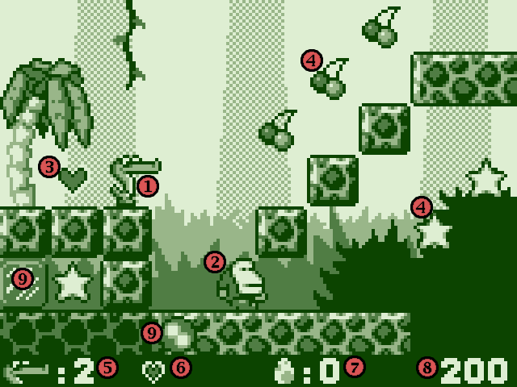

Welcome to Alex 4! This game is completely free, you may play it as much as
you like without paying a single buck. Aren't we the good guys or what? :)
Anyhow, for various reasons Johan became involved in a challenge to make low-res,
four color games. Thus Alex 4 was born. The Alex saga is a long one and
currently (as you probably can guess) in its fourth version. Read on!
DISTRIBUTING
Alex the Allegator 4 is freeware, anybody may (and should) play it.
Therefore, you are encouraged to distribute this game (in its original
form) like crazy. Upload to every website and bbs you know, give a copy to
all your friends, etc.. However, this game may not be included in a
compilation or any other kind of commercial package without the permission
from the author. See contact near the end of this document.
DESCRIPTION
Alex the Allegator 4 is a true jump'n'run, just like the old classic ones.
Guide Alex through the jungle in order to save his girlfriend
Lola from evil humans who want to make a bag of her.
Alex 4 is a very small game. It runs in a very low resolution with only four colors and will
not provide you with any real time video or 3D effects. Nor will it snare you with a compelling
storyline. It's only a short platform game with a few tricks up it's sleeve.
We're sure you'll like it.
THE PLOT
As always everything was nice and quiet in the beginning. But suddenly... Oh no!
Lola is gone, again! This time she has been captured by evil humans who want
to turn her into a bag. Or a pair of expensive shoes.
It's for real! Help Alex through the jungle so that he can save Lola. Hurry!
PLAYING & CONTROLS
It's really easy. Every level has an exit which Alex must find in order to
advance to the next level. On his way, Alex can pick up various thing for
points and powerups.
Every here and there Alex will run into enemies. These can be jumped on and
eaten, or you can spit on them. Eating them will generate more points though.
To spit, you'll need ammo. This is obtained by eating large eggs that are
scattered over the levels. Watch your ammo level, once you're out of eggs you
must find new ones before you can spit again.
Another way of defeating enemies is the roll mode. On some levels you can find
a rotating symbol. Step on it and Alex will turn into a ball and roll fast in
the direction he was facing.
When rolling, Alex can crash into the enemies without losing health. He can
also crash into some blocks and make new paths through the level. While
rolling, it is impossible to stop or turn. Alex will not stop until he hits a
wall.
Controls
Alex the Allegator 4 is best played with a gamepad or joystick with at least two buttons.
If you still want to play it with the keyboard, here's how:
| move | left & right arrows |
| jump | alt |
| spit | left control (you can only spit if you have eggs!) |
Overview

- This is Alex. You control him throughout the game.
- This is a typical enemy. Don't run into him or you'll lose energy. You can jump on some enemies to render them harmless.
- A heart. Pick it up to increase your energy. You can have at most two hearts at the same time.
- Bonus items. Cherries and stars are scattered all over the level, eat them to increase your score.
- Here you can see how many lives you have left.
- Your current energy level. If you have no hearts left, you lose a life.
- Number of eggs you have. Pick up eggs to spit on enemies.
- Your current score.
- Ice block and roll activator. Step on the roll activator to turn Alex into a ball, he can then smash the ice blocks.
PICKUPS
There are some items to be found in this game. Here's a short list of them:
| 1up | gives you one extra life |
| star | gives you 100 points |
| cherry | gives you 10 points |
| heart | gives you more health (max two) |
| egg | adds one egg to Alex' arsenal |
SETTINGS AND CUSTOMIZATION
In the root directory of Alex4 is a file named alex4.ini. This file holds most setting that you can change
to fine tune your gaming experience. By changing some values in this file you can select the game resolution,
sound and music volume, what mixer device to use and even more. Open the file in Notepad or a similar program,
all the options are explained within the file itself.
If you don't want to bother with the .ini file you can make some quick changes at the menu screen.
By pressing 1, 2, 3 or 4 you can change they resolution of the game according to the table below.
| 1 | 160 x 120 | windowed |
| 2 | 320 x 240 | windowed |
| 3 | 640 x 480 | windowed |
| 4 | 640 x 480 | fullscreen |
CUSTOM GAME
Play a custom game
In order to play a custom game you need to have a set of homemade
levels and a textfile describing where they are located on your computer.
The textfile should describe where the maps are located relative to the textfile itself. The textfile could look like this:
|
// mymaps.txt
|
Here's my first three maps! I hope you like them.
/ Johan
#start#
level01.map
level02.map
level03.map
#end#
|
In this case, the map files are located in the same directory as the textfile. If you want to have the textfile somewhere else,
you will need to add the relative path to the maps. Like this:
|
// mymaps.txt
|
Here's my first three maps! I hope you like them.
/ Johan
#start#
maps/my_maps/level01.map
maps/my_maps/level02.map
maps/my_maps/level03.map
#end#
|
The lines #start# and #end# are not optional, they must be there. In the rest of the file,
you can add whatever you want. Look in the custom_maps/ directory for an example.
Now in order to play the game, you only need to drag and drop the textfile on the game's icon. It couldn't be easier.
Make a custom game
If you want to make some maps of your own, you need to enter the Editor. You can access it in two ways. 1) From the main menu by selecting the EDITOR choice. 2) By pressing F1 while playing a custom game.
The maps in alex4 are made of tiles. Each tile can have a type or an enemy assigned to it. An item may also be placed on a tile.
I suggest you take a look at the example maps (in custom_maps/) to see how they work in practice.
Here's a crib sheet over the functions in the editor.
| File handling |
| load map | shift + L |
| save map | shift + S |
| quit editor | ESC (twice) |
| Map handling |
| map properties | F1 |
| increase width | insert + left or right |
| decrease width | delete + left or right |
| Tiles |
| draw tile | left mouse button |
| pick tile | right mouse button |
| browse tiles | z/x |
| tile palette | p |
| Tile types |
| player dies | q |
| level exit | w |
| roll activator | e |
| breakable block | r |
| water | t |
| water surface | y |
| alex start, left | a |
| alex start, right | shift + A |
| Items |
| 1 up | 1 |
| star | 2 |
| cherry | 3 |
| egg | 4 |
| heart | 5 |
| Enemies |
| grunt | shift + Q |
| spear grunt | shift + W |
| crusher | shift + E |
| spike fish | shift + R |
| jellyfish | shift + T |
| cannon | shift + Y |
| boss, spike truck | shift + U |
| boss, ground pounder | shift + I |
To remove tile types, enemies or items, you can either replace them with a different object, or you can place the same object again at the same position and it will disappear.
Some hints:
Note that tile types and enemies occupy the same memory slot on the tile so
you can only have one of them on the same tile.
The start position for Alex can face right or left depending if you press a or A.
Good maps concentrate on a certain trick or element, if you mix all elements
into a map it will be very hard to make it into a good map. Think themes.
Don't forget to save your maps before you quit the editor!
Upload your maps
If you've made some maps that you think are good ones, don't hesitate to share them with your friends. If you also
want to share them with other Alex-players all over the world.
Visit Free Lunch Design for uploading instructions.
TROUBLESHOOTING / FAQ
Q: I have problems with a specific level, can I mail you and ask about it?
A: No, you cannot. We get truckloads of mail. Please ask at the forum at Free Lunch Design instead. Someone will know
the answer.
Q: The music stutters and plays strangely. What can I do about it?
A: Depending on your computer's speed and hardware you may have to alter the sound settings in alex4.ini.
Read more on how to do that here.
Q: Why is it called Alex 4? Are there any prequels?
A: It is the fourth game about Alex the Allegator. Three more Alex games have been made in the past, they are available
at Free Lunch Design. Or at least linked from there.
Q: Have you made any other free games?
A: Yes indeed, take a look at our main site Free Lunch Design
You will find lots more there.
Q: Why on earth did you waste your time on this game? Why didn't you make
it in high resolution and more colors?
A: There was a challenge at www.total-klik.com where the rules stated low
res and four colors. Also, it's entertaining and challenging to try to
push as much as possible into a small restricted space. Why do painters
paint when they can take photos?
Q: I have read this entire text at least twice and I still cannot find the answer to my problems. Where do I go next?
A: Check out the Free Lunch Design forum. And if you con't find anything to help you there, post your question and it will be answered.
TECHNICAL MUMBO JUMBO
Alex 4 is written in C, using the library Allegro. It also uses the
library DUMB, for playing MOD music.
Allegro: http://alleg.sourceforge.net
DUMB: http://dumb.sourceforge.net
AUTHORS AND CONTACT
Free Lunch Design is an independent game developer from Sweden. Our aim
is to create small, high quality games, where gameplay is in focus.
Alex the Allegator 4 was written and designed by Johan Peitz. Johan Peitz
also drew the graphics. The fabulous music was composed by Anders Svensson
who also created the sound effects.
Visit us on the web:
http://www.freelunchdesign.com
If you have comments, bug reports, or just want to ask something
you can contact Free Lunch Design by e-mail. We do however get a lot of
mail and it might take a while before we answer, so if you have a question
please check the online faqs and forums first.
E-Mail: info (at) freelunchdesign (dot) com
If you want to support Free Lunch Design in monetary ways, please enter
our website (see above) and click our sponsors a few times. You can also
donate money from the site via PayPal.
SPECIAL THANKS
A game doesn't get done all by itself. There's always people and stuff around
who inspires the final product. Here's a short list of people who get some
extra special thanks.
Nintendo, for creating the best games in the world.
Eric Vaughn, for coming up with the four color challenge.
Ben Davis, for helping out a lot with DUMB.
Triton productions (later Starbreeze), for Fasttracker 2.08.
Everybody at the Cod, for keeping our motivation up.
The folks at the Allegro.cc boards for support and feedback.
Blambot Fonts, for supplying the big font.
Ivan Baldo, for for PPCOL.
We'd also like to thank the beta testers who valiantly played the game inside
and out looking for broken levels and bugs.
Arnon Yaari
Johannes Kristinsson
Lennart Steinke
Tryggve Sollid
Thanks a bunch!
README BONUS
Congratulations for reading this far! Not many do. Here's a special tip,
only for you. Try to collect all stars and cherries on every level. If
you do, a special secret will be unlocked. Good luck!
DISCLAIMER
Free Lunch Design does not accept responsibility for any effects, adverse or otherwise,
that this software may have on you, your computer, your sanity, your
dog, or anything else that you can think of. Use it at your own risk.
We have, however, never experienced any trouble with it.
- The End -
|